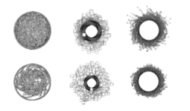
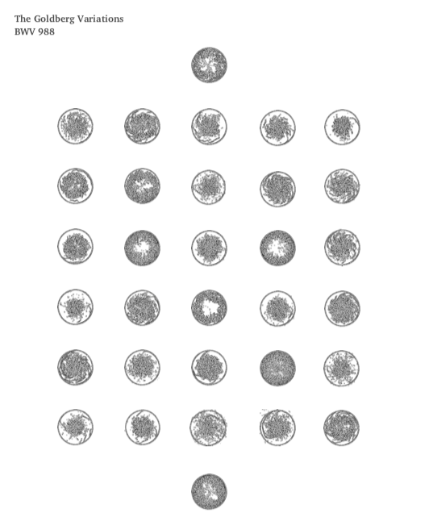
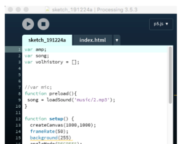

Order in Sound - Sound Mapping
Introduction
The Goldberg Variations, BWV 988, is a musical composition for harpsichord by Johann Sebastian Bach, consisting of an aria and a set of 30 variations. It shows the order of the universe. I want to use the processing to visualize the music into 2D, or even into 3D to explore the underlying order of Goldberg Variations. I chose the version of musician Zhu XiaoMei. She once explained the Goldberg variations is like one’s life from birth to death. Therefore, I want to show each variation for an isolated image. Through the different expression of representation, I want to investigate the similarity and difference of each variation to figure out what is the order of life.
Process
1 Exploration
To visualize the music, I tried different forms to make it beautiful and identified. Several images were chosen to show the process.
2 Iteration
Change the radius and form of particles to make the final results more visually appealing.

3 Test and Selection
Try different aspects of sound according to the p5.js library including p5. Amplitude, p5.Oscillator, p5.FFT and try different formats of particle. During the exploration, I found that p5.FFT will return an array of data, therefore it is hard to form a continuous format. I tested many visual expressions to make it appealing. Here are some test results.
Result
My Reflection
1. Life is beautiful at the moment, but not always. 2. Pattern only can been seen when it has passed. 3. Even we have many variation along the way, the first and the end is quite similar, we draw a circle in our life and came to the final destination - our birth.
